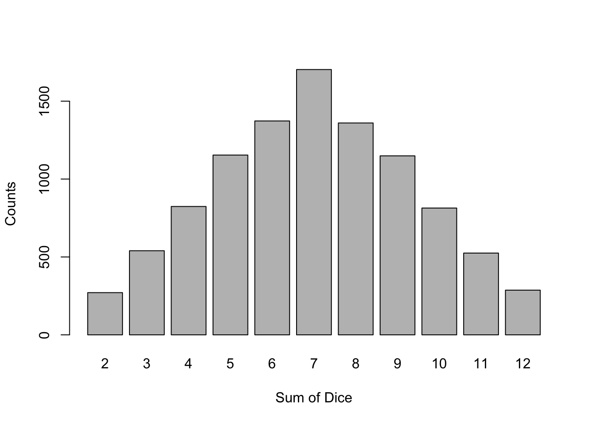

Chapter 2 Probability
In this chapter, we’ll delve into Probability, the branch of mathematics that deals with the study of randomness and uncertainty, helping us understand and quantify the likelihood of different outcomes.
2.1 Sample Space and Events
Definition 2.1 An experiment is any activity or process whose outcome is subject to uncertainty.
Definition 2.2 The sample space of an experiment, denoted by \(\Omega\) or \(\mathcal{S}\), is the set of all possible outcomes of that experiment.
Definition 2.3 An event is any collection (subset) of outcomes contained in the sample space \(\Omega\).
Example 2.1 For the following examples, define the sample space and give an example of an event. Code for running the experiment in R is given.
Experiment 1: Roll a fair six-sided die.
## [1] 5Experiment 2: Roll two fair six-sided dice.
## [1] 1 3Experiment 3: Randomly select a real number in the closed interval from 0 to 1.
## [1] 0.61371962.2 Set Theory
Note: For the following examples, suppose a fair six-sided die is rolled, so \(\Omega=\{1,2,3,4,5,6\}\).
Define the following events: \(A = \text{roll an even} = \{2,4,6\}\), \(B=\text{roll a 3 or higher} =\{3,4,5,6\}\), \(C=\text{roll a prime number}=\{2,3,5\}\).
Definition 2.4 A complement of an event A, denoted by \(A^c\) or A’, is the set of all outcomes in \(\Omega\) that are not contained in A.
Illustration
Definition 2.5 The union of two events A and B, denoted by \(A \cup B\) and read “A or B”, is the event consisting of all outcomes that are either in A or B or in both.
Illustration
Definition 2.6 The intersection of two events A and B, denoted by \(A \cap B\) and read “A and B”, is the event consisting of all outcomes that are in both A and B.
Illustration

Definition 2.7 The set difference of two events A and B, denoted by AB and read “difference of A and B”, is the event consisting of all outcomes that are in A but not in B.
Illustration

Definition 2.8 The null or empty set is the set of no events (or elements), denoted \(\emptyset\).
Definition 2.9 When \(A \cap B = \emptyset\), A and B are said to be mutually exclusive (or disjoint) events.
Example 2.2 Suppose a fair six-sided die is rolled, so \(\Omega=\{1,2,3,4,5,6\}\).
Define the following events: \(A = \text{roll an even} = \{2,4,6\}\), \(B=\text{roll a 3 or higher} =\{3,4,5,6\}\), \(C=\text{roll a prime number}=\{2,3,5\}\).
Determine the following sets and fill in the Venn diagrams representing these sets.
Example 2.3 Draw and determine \(A \cup B^c\).
Example 2.4 Draw and determine \(A \cap B \cap C^C\).
Example 2.5 Draw and determine \([A \cup B] \cap C\).

Example 2.6 Draw and determine \(A \cap B \cap C\).

2.3 Axioms and Rules of Probability
Definition 2.10 The probability of an event, \(A\), is denoted by \(P(A)\) and represents the likelihood or chance that the event \(A\) will occur. Note that \(0 \leq P(A) \leq 1\).
Axioms of Probability
The axioms of probability were introduced by the mathematician Andrey Kolmogorov in 1933. These axioms form the foundation of probability theory, providing a rigorous, axiomatic framework for quantifying uncertainty. In mathematics, an axiomatic approach means that all rules and theorems are built from a set of fundamental principles, or axioms.
Axiom 1: For any event A, \(P(A) \ge 0\)
Axiom 2: \(P(\Omega) = 1\)
Axiom 3: If \(A_1, A_2, A_3, \dots\) is an infinite collection of disjoint events, then \[P \big( \cup_{i=1}^{\infty} A_i \big) = P(A_1 \cup A_2 \cup A_3 \cup \dots) = \sum_{i=1}^{\infty} P(A_i)\]
Probability Rules
The following can be derived from the Axioms of Probability.
- \(P(\emptyset) = 0\)
- For any event A, \(P(A) + P(A^c)\) = 1
- \(P(A^c) = 1 - P(A)\)
- For any event A, \(0 \le P(A) \le 1\)
- For any two events A and B, \(P(A \cup B) = P(A) + P(B) - P(A \cap B)\)
- For any three events A, B, and C,
\(P(A \cup B \cup C) = P(A) + P(B) + P(C) - P(A \cap B) - P(A \cap C) - P(B \cap C) + P(A \cap B \cap C)\).
- \(\left[A \cup B\right]^C = A^C \cap B^C\)
- \(\left[A \cap B\right]^C = A^C \cup B^C\)
Example 2.7 Suppose our class has the following breakdown:
70% Math students
20% seniors
30% Born in Denver
10% Math students and seniors
15% Math students and born in Denver
10% Seniors and Born in Denver
5% Math students, seniors, and born in Denver
Define events as follows: A = Math student, B = senior, C = Born in Denver.
Suppose a random student from the class is selected. Calculate the following probabilities.
\(P(A \cup B)\)
\(P(C \backslash B)\)
\(P([A \cap C]^c)\)
\(P(A \cup B \cup C)\)
2.4 Counting Techniques
Equally Likely Outcomes
If \(\Omega = \lbrace x_1, x_2, ... x_N \rbrace\) and all outcomes are equally likely, then \(P(A) = |A| / N\), where \(|A|\) is the number of outcomes contained in the event A.
Example 2.8 You roll a fair six-sided die. Calculate \(P(even)\).
Theorem 2.1 (Product Rule for Ordered Pairs) If the first element of an ordered pair can be selected in \(n_1\) ways and for each of the these \(n_1\) ways the second element of the pair can be selected in \(n_2\) ways, then the number of pairs is \(n_1 \cdot n_2\).
Example 2.9 You flip three fair coins. Calculate the probability that all are heads or all are tails.
Theorem 2.2 (Generalized Product Rule) Suppose a set consists of k elements (k-tuples) and that there are \(n_1\) possible choices for the first element, \(n_2\) possible choices for the second element, … , and \(n_k\) possible choices for the \(k^{th}\) element, then there are \(n_1 \cdot n_2 \cdot \cdots n_k\) possible k-tuples.
Example 2.10 How many license plates can be chosen if the first three symbols are letters and the last three symbols are numbers?
The factorial function, \(n!\), is important in counting methods and probability. It is the product of all positive integers less than or equal to \(n\), that is, \(n! =n \cdot (n-1) \cdot (n-2) \cdot \ldots \cdot 2 \cdot 1 \text{ for } n \in \mathbb{Z}^+\).
Note: \(0! = 1\)
Definition 2.11 An ordered subset is called a permutation. The number of permutations of size \(k\) that can be formed from the \(n\) elements in a set will be denoted by \(P_{n,k}\).
\(\boxed{P_{n,k} = \frac{n!}{(n-k)!}}\)
Definition 2.12 An unordered subset is called a combination. The number of combinations of size \(k\) that can be formed from the \(n\) elements in a set will be denoted by \(\binom{n}{k}\) or \(C_{n,k}\).
\(\boxed{\binom{n}{k} = C_{n,k} = \frac{n!}{k! \cdot (n-k)!}}\)
Example 2.11 Suppose there are five competitors in an Olympic competition. A gold, a silver, and a bronze medal are awarded for the top three competitors. Are combinations or permutations more appropriate for this situation? How many possible ways can these three awards be given out?
Example 2.12 Suppose there are five competitors in an Olympic competition and only three can advance to the final competition. Are combinations or permutations more appropriate for this situation? How many possible ways can you choose three people from a group of five?
Example 2.13 Powerball is an American lottery game where participants pay $2 for a chance of winning the grand prize, typically hundreds of millions of dollars. Participants choose five numbers between 1 and 69 and one additional number between 1 and 26. If they choose all the numbers correctly, they win the grand prize. What is the probability of matching all six numbers?
Example 2.14 Suppose you are dealt three cards from a standard 52-card playing deck. What is the probability that you get a heart, a diamond, and a club in that order? What if order doesn’t matter?
2.5 Conditional Probability
Conditional probability is the likelihood of an event occurring given that another event has already occurred. It refines our understanding of probability by taking into account additional information that might affect the outcome. Understanding conditional probabilities is crucial in many areas of statistics and decision-making, as it allows us to update our predictions and assessments based on new evidence.
Definition 2.13 For any two events A and B with \(P(B)>0\), the is defined by: \[P(A|B) = \frac{P(A \cap B)}{P(B)}\]
Example 2.15 The following is a contingency table from a survey on congressional approval.
| Political Affiliation | Approves of Congress | Disapproves of Congress | Total |
|---|---|---|---|
| Republican | 100 | 20 | 120 |
| Democrat | 20 | 80 | 100 |
| Independent | 40 | 40 | 80 |
| Total | 160 | 140 | 300 |
- What is the probability that a randomly selected individual from the survey approves of Congress?
- What is the probability that a randomly selected individual approves of Congress given that they are Democrat?
- Given that the randomly selected person approves of the Congress, what is the probability that they are Republican?
Theorem 2.3 Multiplication Rule: \(P(A \cap B) = P(A|B) \cdot P(B)\)
Example 2.16 Suppose that people with a genetic variation have a 50% chance of getting a rare disease. The probability of having the genetic variation is 1%. What is the probability that a randomly chosen person has the genetic variation and also has the disease?
Theorem 2.4 Law of Total Probability: Let \(A_1, A_2, \ldots, A_k\) be mutually exclusive and exhaustive events (i.e., the events form a partition). Then for any event B, \[P(B) = P(B|A_1) \cdot P(A_1) + P(B|A_2) \cdot P(A_2) + \ldots + P(B|A_k) \cdot P(A_k) \]
Illustration of a Partition
Example 2.17 Box #1 has ten computer chips (five working and five broken). Box #2 has five (one working and four broken). Suppose we randomly select one of the two boxes and then randomly select a chip. What is the probability that the chip is broken?
Theorem 2.5 Bayes’ Theorem: Suppose that \(A_1 \cap A_2 = \emptyset\) and \(A_1 \cup A_2 = \Omega\), then if \(P(B)>0\),
\[ P(A_1|B) = \frac{P(B|A_1)P(A_1)}{P(B|A_1)P(A_1)+P(B|A_2)P(A_2)} \]
Let \(A_1, A_2, \ldots, A_k\) be a collection of mutually exclusive and exhaustive events, then if \(P(B)>0\),
\[P(A_j|B) = \frac{P(A_j \cap B)}{P(B)} = \frac{P(B|A_j) \cdot P(A_j)}{\sum_{i=1}^k P(B|A_i) \cdot P(A_i)} \]
Example 2.18 Suppose a test to detect a rare disease is positive 95% of the time for a person with a disease and is positive 1% of the time for a person without the disease. Further, assume that 0.5% of the population has the disease. Given that a person tests positive for a disease, what is the probability that they actually has the disease?
2.6 Independence
Recall:
Definition 2.14 When \(A \cap B = \emptyset\), A and B are said to be mutually exclusive (or disjoint) events.
Definition 2.15 Two events A and B are independent if \(P(A|B) = P(A)\) and dependent otherwise.
Also, A and B are independent if and only if \(P(A \cap B) = P(A) \cdot P(B)\).
Example 2.19 Recall from the previous example that a test to detect a rare disease is positive 95% of the time for a person with a disease and is positive 1% of the time for a person without the disease. Further, assume that 0.5% of the population has the disease. Let \(D\) be the event that one has the disease and let \(P\) be the event that one has a positive test.
Are D and P mutually exclusive?
Are D and P independent?
2.7 Objective vs. Subjective Probability
There are two different interpretations of Probability. Both follow the Axioms of Probability.
Definition 2.16 Objective Probability refers to the probability of an event as determined by the long-term frequency of its occurrence, based on repeated trials or observations. It is rooted in empirical data and reflects the likelihood of an event as the proportion of times it occurs in a large number of trials.
Example 2.20 I flip a coin 100 times and it lands on head 53 times. I estimate the probability of flipping a heads to be \(P_{100}(head) = \frac{53}{100} = 0.53\). As we flip the coin more and more, we would expect that \(P_n(head) \to 0.5\) as \(n \to \infty\) if the coin is actually a fair coin.
Definition 2.17 Subjective Probability refers to the probability of an event as determined by an individual’s personal judgment or belief, rather than objective data. It reflects the degree of confidence one has in the occurrence of an event. A well-known approach to subjective probability is Bayesian probability, which updates these beliefs based on new evidence.
Example 2.21 I am given a coin which I have no reason to believe it is unfair (i.e, \(P(head) = 0.5\)). I flip the coin 100 times and 3 land on heads. Since this is very unlikely to happen if the coin is fair, I update my estimate to be \(P(head)=0.1\) (i.e., somewhere in between \(3/100=0.03\) and \(1/2 = 0.5\)).
2.8 R Companion for Chapter 2
Example 2.22 Let’s simulate a fair six-sided die roll. Recall that we need to use the function so that we all generate the same random data. For consistency, I always set the seed to 2020, i.e., set.seed(2020). The sample function will generate 100 random die rolls with each possible outcome (1,2,3,4,5,6) being equally likely.
## [1] 4 4 6 1 1 4 2 6 1 5 2 2 6 5 2 3 2 5 4 2 6 6 4 6 4 2 4 5 4 4 3 6 2 2 6 3 5 4
## [39] 5 5 2 5 1 6 3 5 1 5 3 1 5 3 2 6 2 1 3 2 1 6 5 5 2 5 6 4 3 6 4 4 2 2 1 6 1 4
## [77] 6 2 2 2 1 4 1 1 4 2 2 5 5 4 4 4 6 5 4 1 6 5 1 4Let’s make a histogram of the simulated data. Recall that each outcome (1,2,3,4,5,6) is equally likely in theory but in our simulation, some numbers may come up more than others. To make the histogram look better, I define the boundary breaks to be 0:6 (i.e., 0,1,2,3,4,5,6).
With only 100 random die rolls, the distribution isn’t as flat, uniform, and symmetric as we would expect. The number 3 came up less than we would anticipate. This is OK.
We can also generate a frequency table and use this to create a barplot. This looks a little nicer than the standard histogram and doesn’t require use to use the argument.
## data
## 1 2 3 4 5 6
## 15 21 8 21 18 17If we want a better representation of the true distribution of the fair six-sided die rolls, we could simulate 10000 die rolls instead of 100.
## data
## 1 2 3 4 5 6
## 1630 1657 1733 1655 1629 1696Simulation can be helpful for us to verify hand calculations and to estimate quantities that are hard to calculate by hand. Our simulation results won’t exactly match our hand calculations, but if the sample size is large enough, they should be close.\
For instance, we know that P(Roll=1) = 1/6 for the population of all fair six-sided die rolls. If you refer to the table at the bottom of the previous page, you see that 1 came up 1630 times out of 10000 die rolls. In the simulation, P(1) = 1630/10000 = 0.1630 which is pretty close the the theoretical value of P(1) = 1/6 = 0.1667.\
Here is an example of how to calculate the probability of a die roll less than 3 in our simulation.
# Calculate P(Roll < 3)
# From theory, we know that P(Roll < 3) = P(1) + P(2) = 1/6 + 1/6 = 1/3
# count up the number of rolls less than 3
num.under3 = sum( data < 3 )
# divide the number of rolls less than 3 by the number of rolls
prob.under3 = num.under3 / 10000
prob.under3## [1] 0.3287## [1] 0.3287From theory, we expect P(Roll \(<\) 3) = 1/3 = 0.3333. In our simulation, we found P(Roll \(<\) 3) = 0.3287.
Example 2.23 Let’s simulate rolling two fair six-sided dice 10,000 times and calculate some probabilities. will represent the first die roll and will represent the second die roll.
set.seed(2020)
d1 = sample(x = 1:6,size = 10000,replace = T)
d2 = sample(x = 1:6,size = 10000,replace = T)From our simulated data, let’s calculate P(D1 = 1 and D2 = 2), that is, the probability that first die roll is 1 and the second die roll is 2. From theory, this probability should be 1/36 = 0.0278. (We use the for in R.)
## [1] 0.0256Next, let’s calculate P(D1 \(<\) 2 or D2 \(>\) 2), that is, the probability that the first die roll is less than 2 or the second die roll is greater than 2. From theory, this probability should be 0.7222. We use the for the in R.)
## [1] 0.7183Finally, let’s look at the frequency table and distribution of the sum of the two die rolls.
##
## 2 3 4 5 6 7 8 9 10 11 12
## 271 540 824 1154 1373 1703 1360 1149 814 525 287